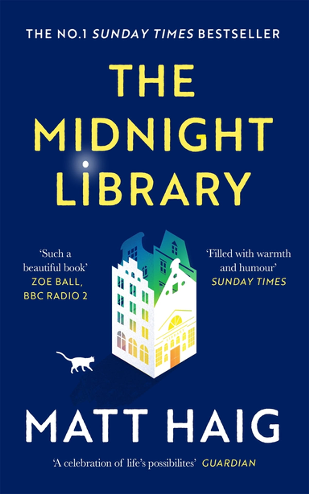
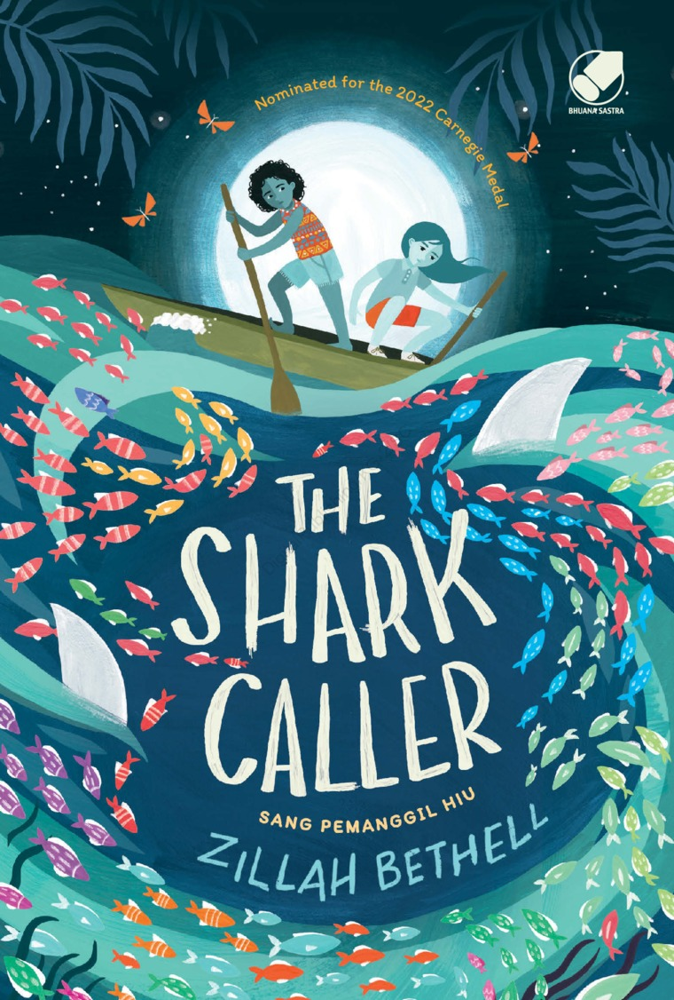

The Midnight Library
by. Matt Haig

In The Midnight Library, Matt Haig’s enchanting new novel, Nora Seed finds herself faced with this decision.
Faced with the possibility of changing her life for a new one, following a different career,
undoing old breakups, realizing her dreams of becoming a glaciologist;
she must search within herself as she travels through the Midnight Library to decide what is truly fulfilling in life,
and what makes it worth living in the first place.
The Shark Caller
by. Zillah Bethell

Desperate to become a shark caller to avenge the death of her parents,
Blue Wing is instead charged with befriending infuriating newcomer Maple.
At first they are angry and out of sync with the island and each other.
But when the tide breathes the promise of treasure, can they overcome their differences and brave the deadliest shark in the ocean?